Conversational UIs
Talking to Siri, Alexa, and Your Web Browser
 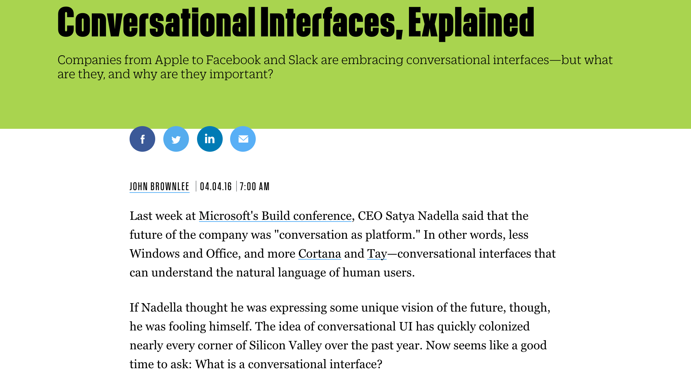
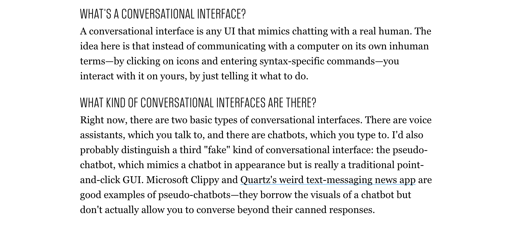
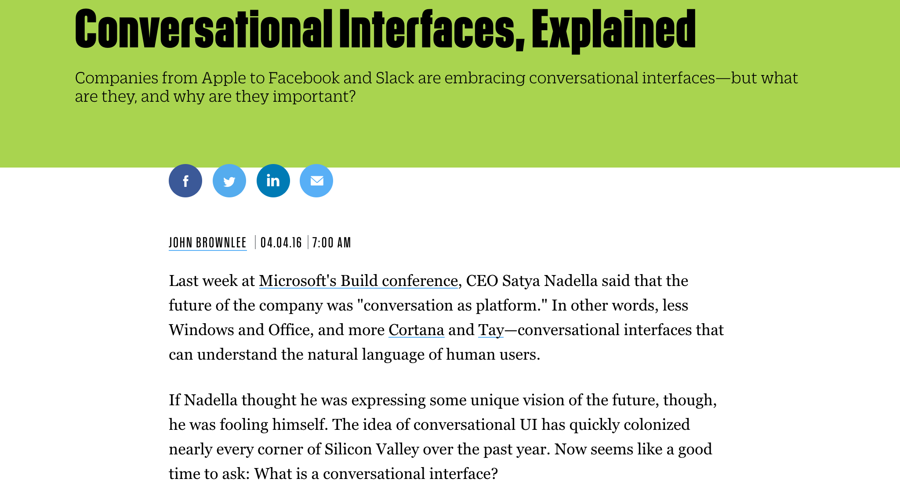
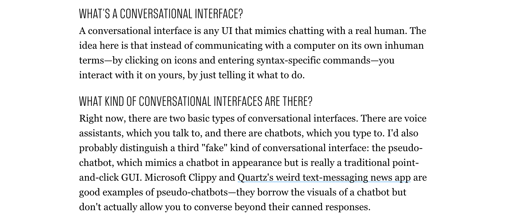
WarGames: Chatbots from 1983
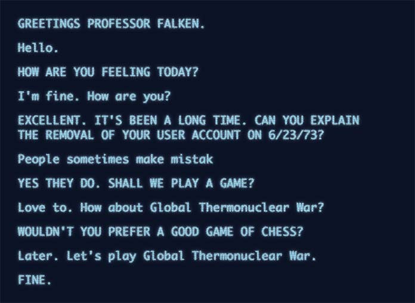
Web Speech API
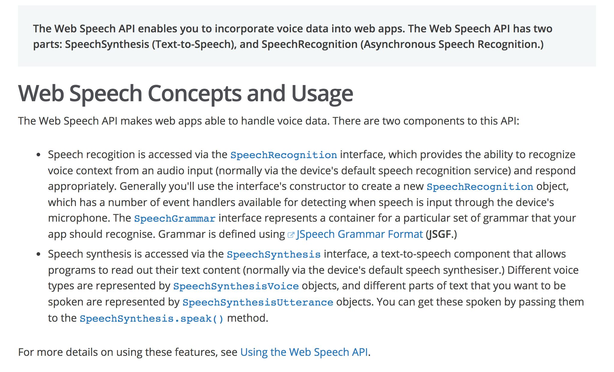
http://caniuse.com/#feat=speech-synthesis

var msg = new SpeechSynthesisUtterance('Hello World');
window.speechSynthesis.speak(msg);
https://github.com/mdn/web-speech-api/
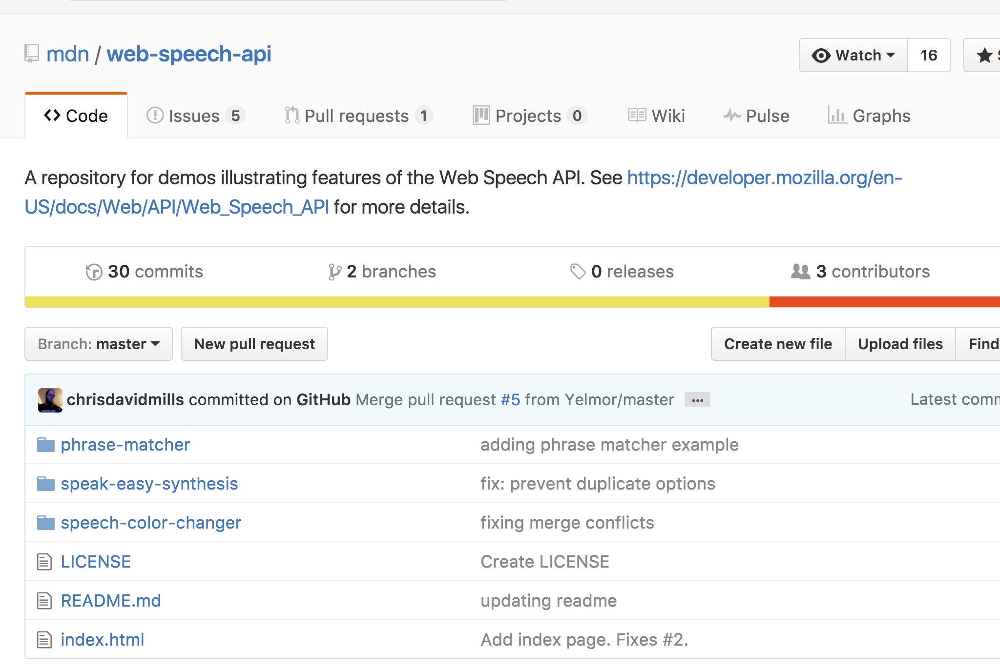
Apple's Conversational UI (1987)
Siri (2011)
 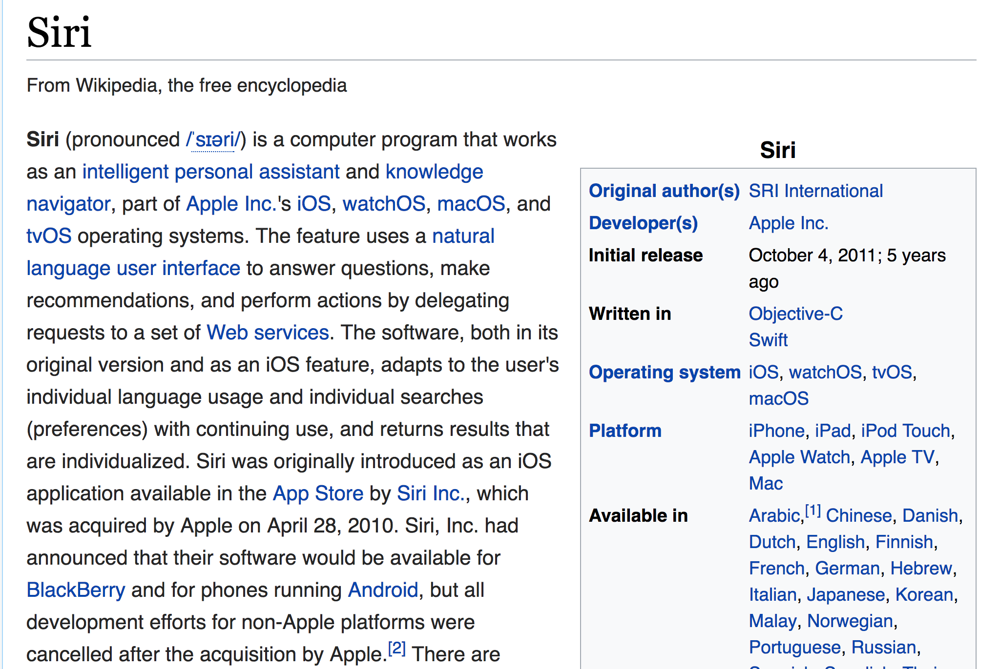
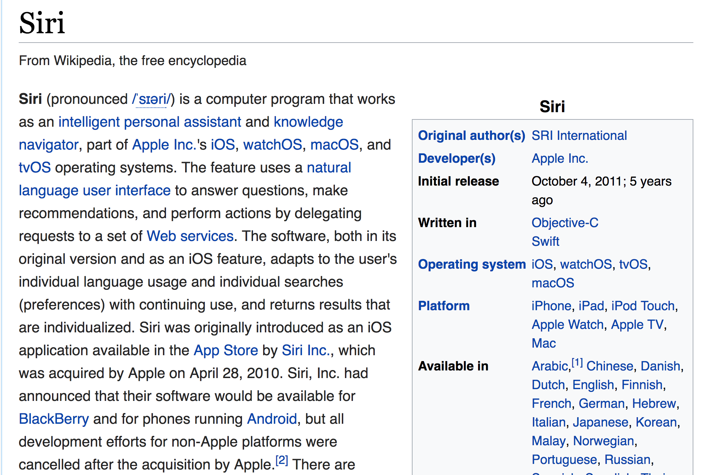
Speech Recognition === Cloud

 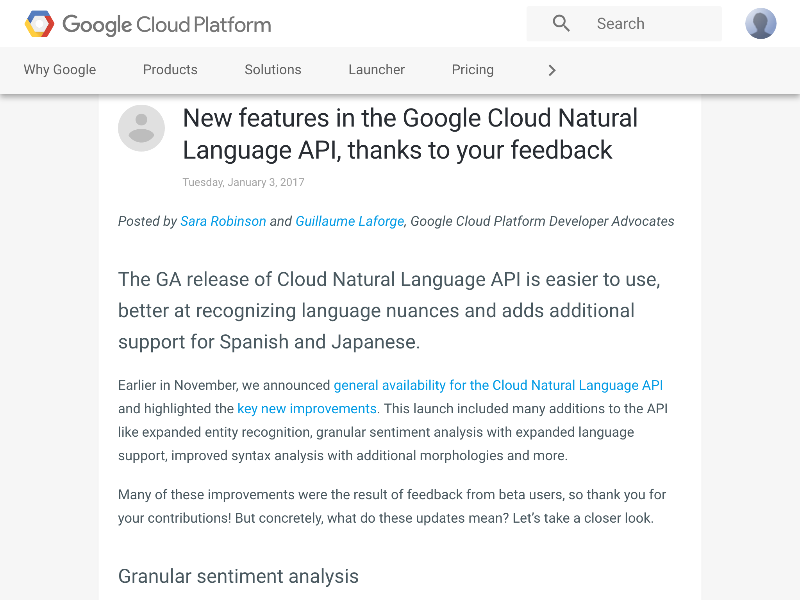
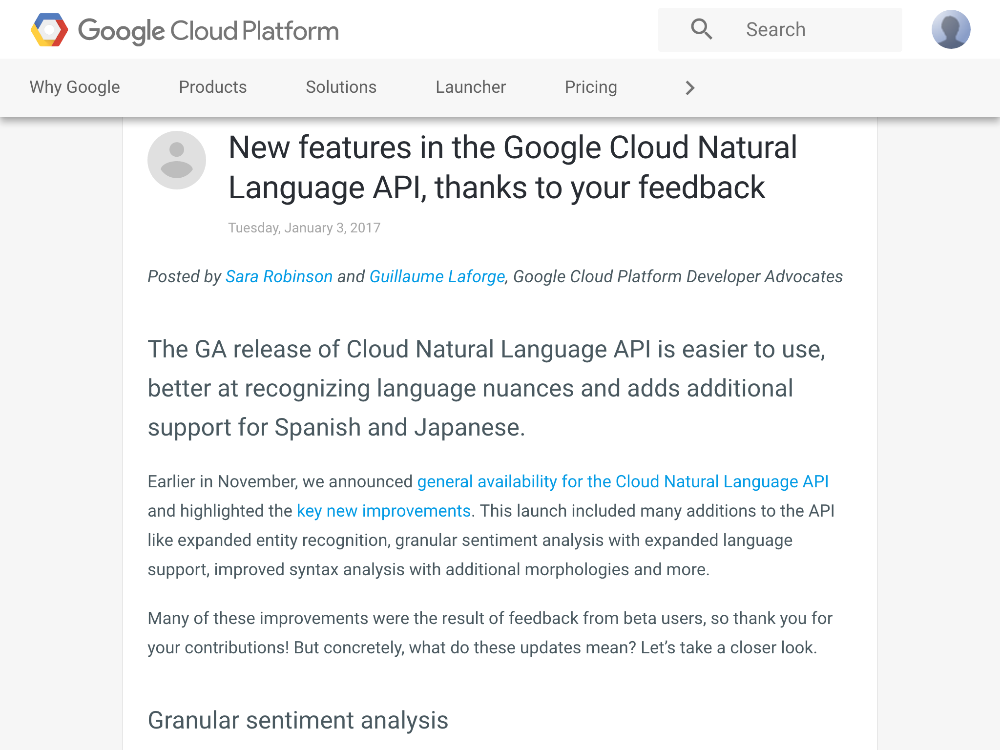
Live Speech-to-Text Demo
https://www.google.com/intl/en/
chrome/demos/speech.html
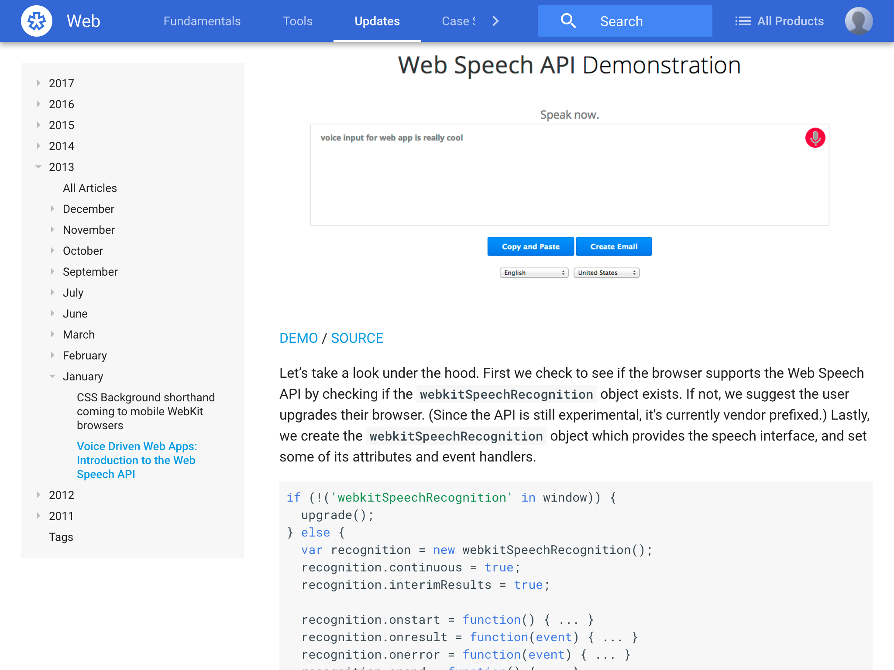
http://caniuse.com/#feat=speech-recognition

https://github.com/mdn/web-speech-api/
Speech color changer
Original source:
http://github.com/mdn/web-speech-api
Interesting Source Code
var colors = [ 'aqua', 'azure', 'beige']; //snip
var grammar = '#JSGF V1.0; grammar colors; public = ' +
colors.join(' | ') + ' ;'
var recognition = new SpeechRecognition();
var speechRecognitionList = new SpeechGrammarList();
speechRecognitionList.addFromString(grammar, 1);
recognition.grammars = speechRecognitionList;
More Interesting Source Code
button.onclick = function() {
recognition.start();
console.log('Ready to receive a color command.');
}
recognition.onresult = function(event) {
var last = event.results.length - 1;
var color = event.results[last][0].transcript;
diagnostic.textContent = 'Result received: ' + color + '.';
bg.style.backgroundColor = color;
console.log('Confidence: ' + event.results[0][0].confidence);
}
Step 1.

Step 3.

Step 4.

Conversational UIs
Talking to Siri, Alexa, and Your Web Browser